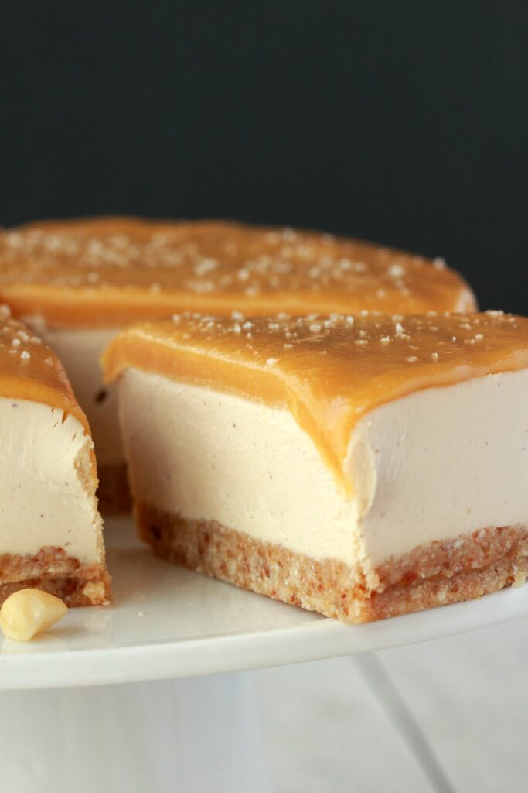

Salted Caramel Cheezecake
Diet: Raw, Dairy-Free, Gluten-Free
Prep Time: 45 min
Servings: 12
Description
This vegan cheesecake is the best ever! It’s rich and creamy and topped with a salted caramel fudge sauce. So much like the ‘real thing’ you will hardly believe it.

Ingredients
For the Crust:
- 1 cup Macadamia Nuts OR Walnuts(150g)
- ½ cup Pitted Medjool Dates (88g) Packed*
- 1 cup Dessicated Coconut (80g) Finely Shredded Coconut* OR oreo or graham cracker crumbs
For the Cheezecake Filling:
- 3 cups Raw Cashews (450g) soaked overnight, drained and rinsed*
- ¾ cup Water (180ml)
- 1/4 cup Honey
- 1/2 cup Maple Syrup (180ml)
- ½ cup Coconut Oil (120ml) Melted
- ¼ cup Lemon Juice (60ml) Freshly Squeezed
- 1 tsp Vanilla Extract
- Optional: 1/4 tsp almond extract
For the Salted Caramel Fudge Sauce:
- ½ cup Coconut Butter (120ml) Melted*
- 1/3 cup Maple Syrup (120ml)
- 1/4 cup Honey
- 1 tsp Vanilla Extract
- ½ tsp Sea Salt
For Decorating:
Steps
- Spray an 8 inch round springform pan with non-stick spray and line the bottom with parchment paper. Set aside.
- Add the macadamia nuts, pitted dates and dried dessicated coconut to the food processor and process until it starts to form into a sticky dough. It will start off crumbly, keep going until it starts to clump together in sticky clumps. Transfer to the springform pan and smooth it down into a pie crust. Use the back of a spoon to press it down into a neat flat layer. Place into the freezer to set.
- Take your soaked and rinsed cashew nuts and place them into the blender jug. Add the water, maple syrup, melted coconut oil, lemon juice and vanilla extract and then blend everything together until very smooth. Stop and give your blender a break as needed as this is a lot of volume to blend up. Pour this over the macadamia crust and smooth down with the back of a spoon. Return to the freezer to set completely – about 4-6 hours.
- When the cheesecake has completely set, remove it from the springform pan and put it onto a cake stand to do your topping.
- Add the melted coconut butter, maple syrup, vanilla extract and sea salt into a bowl and stir it together into a caramel sauce. Spread this out over the top of the cheesecake, working quickly, as the sauce thickens and sets quite fast when in contact with the cold cheesecake.
- Decorate the cheesecake with sprinkles of sea salt and some macadamia nuts.
- Allow the cheesecake to thaw at room temperature for at least 30 minutes before serving.
- Once the cheesecake is thawed, keep it stored in the refrigerator or freezer*.
Notes
Half a cup of medjool dates (packed) is approximately 10 pitted medjool dates.
Dessicated coconut is also called finely shredded coconut or finely shredded coconut flakes. It’s dried coconut that is shredded very finely.
If you forget to soak the cashews overnight, then you can take a shortcut. Place the cashews into a bowl and pour over boiling hot water from the kettle. Leave them to soak for 1 hour. Soaking in hot water reduces the time needed for soaking. It is still more ideal to soak them overnight for this recipe though.
The topping must be made with coconut butter and not coconut oil. If you can’t easily find coconut butter you can also make your own. It’s super easy and fun to make.
Prep time does not include time spent setting in the freezer.
If you know when you’re going to be serving this cheesecake, you can keep it in the freezer until you need to serve it and then let it thaw at room temperature and serve. From then on, if stored in the refrigerator, the texture can become a little softer, so you might prefer to let it firm up in the freezer again before serving.
Recipe Author
Alison Andrews of Loving it Vegan